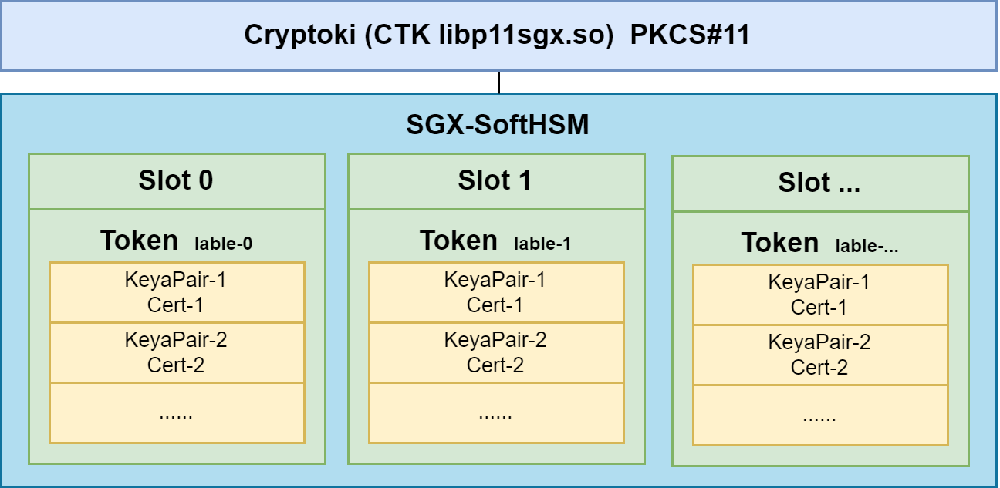

Airren Ren
Monday, January 1, 1
PKCS11
PKCS#11 Terminology
Cryptoki
Cryptoki(Cryptographic Token Interfaces) is a library(dll or so file) that is provided by the cryptographic device vendors. It contains an implementation of the PLCS#11 C header files. Every cryptographic device vendor provides its own PKCS#11 complaint library. Applications has to load this library in order to access the cryptographic device.
Slots
Slots are the logical partitions in the cryptographic device. In case of HSMs, there could be hundreds or more slots are available while in the case of smart cards, there could be only on slot available.
Token
Token is a device where application stores the cryptographic objects and also preform cryptographic operations. In the case of the smart cards, you can think of slot as a smart card reader while the smart card inserted inside the reader is the token. In case of HSM, you cannot visualize the slot and token relationship just like you did in case of reader and the smart card, when a slot is initialized in HSM then the token is present in the slot.
Session
Once a token is present in the slot then the application opens a session(logical connection) with the token. Once the session is in place, the application can perform different cryptographic operations with the token e.g. application can use the session object to generate asymmetric key pair, produce signature with the private key present inside the token and so on. When the application is done with the cryptographic operations then it can close the session with the token.
Mechanism
In PKCS#11 terminology, cryptographic algorithm are called mechanisms e.g. RSA, AES and SHA 256 cryptographic algorithms are called mechanism.
User
Cryptographic devices contains private and public objects. In order to access the private objects, users must be authenticated from the device. One of the operation that requires authentication is the access of the private key in order to produce a signature.
HSM

PKCS11 Tools
OpenSC
OpenSC provides a set of libraries and utilities to access smart cards. It mainly focuses on cards that support cryptographic operations. It facilitates their use in security applications such as mail encryption, authentication, and digital signature.
[pkcs11-tool](Ubuntu Manpage: pkcs11-tool - utility for managing and using PKCS #11 security tokens)
provided by OpenSC
Init Token
1pkcs11-tool --module /usr/local/lib/libp11sgx.so \
2--init-token --label "$token" --so-pin 12345678 --init-pin --pin 12345678 \
3--slot 0
lable may be same in different slot. If slot not specify，it will reset slot 0.
Create Key Pair
1pkcs11-tool --module /usr/local/lib/libp11sgx.so \
2--login --pin 12345678 --token-label "$token" \
3--keypairgen --key-type rsa:2048 --id 0001 --label "cert-key" --usage-sign
--token-labelcan be replaced by--token
Add Cert to HSM
1pkcs11-tool --module /usr/local/lib/libp11sgx.so \
2-login --pin 12345678 --token "$token" \
3--write-object clientcrt.der --type cert --id 0001
Check private Key and Cert status
1pkcs11-tool --module /usr/local/lib/libp11sgx.so \
2--login --pin 12345678 -O --token "$token"
List slots
1pkcs11-tool --module /usr/local/lib/libp11sgx.so -L
p11req
Mastercard/pkcs11-tools A set of tools to manage objects on PKCS#11 cryptographic tokens. Compatible with any PKCS#11 library, including NSS.
1p11req -l /usr/local/lib/libp11sgx.so -i cert-key -d '/CN=sgx-1' -t "$token" -p 12345678 -o new.csr
2
3# -i label/alias of the key
p11tool
1# p11tool GnuTLS PKCS#11 tool
2apt-get install gnutls-bin
Usage
1# list tokens
2p11tool --list-tokens
1Token 1:
2 URL: pkcs11:model=PKCS%2315%20emulated;manufacturer=Common%20Access%20Card;serial=000058bd002c19b5;token=CAC%20II
3 Label: CAC II
4 Type: Hardware token
5 Flags: RNG, Requires login
6 Manufacturer: Common Access Card
7 Model: PKCS#15 emulated
8 Serial: 000058bd002c19b5
9 Module: opensc-pkcs11.so
10
11# /usr/lib/x86_64-linux-gnu/opensc-pkcs11.so
p11-kit
Github: https://github.com/p11-glue/p11-kit
Install p11-kit-module
1sudo apt install p11-kit
2sudo apt install p11-kit-modules
1p11-kit server --provider /usr/lib/x86_64-linux-gnu/opensc-pkcs11.so "pkcs11:model=PKCS%2315%20emulated;manufacturer=Common%20Access%20Card;serial=000058bd002c19b5;token=CAC%20II"
Forwarding a sgx-ctk
1p11-kit server --provider /usr/local/lib/libp11sgx.so "pkcs11:model=SGXHSM%20v2;manufacturer=SGXHSM%20project;serial=b326ab0138ada9cb;token=sgx-1" -f
2
3# use ssh to forward a unix socket
4ssh -R /run/user/1000/p11-kit/pkcs11:${P11_KIT_SERVER_ADDRESS#*=} ubuntu@sdewan
5
6pkcs11-tool --module /lib/x86_64-linux-gnu/pkcs11/p11-kit-client.so -L
7
8
9pkcs11-tool --module /usr/lib/p11-kit-client.so -L
10pkcs11-tool --module /usr/lib/p11-kit-client.so --login --pin 12345678 -O --token sgx-1
11
12pkcs11-tool --module /usr/local/lib/pkcs11/p11-kit-client.so -L
Implementation
Define protocol that serializes smart card access
Expose the protocol at a unix domain socket
Forward the socket with ssh

Debug
Set the Value of to print the debug log
1export P11_KIT_STRICT=yes;export P11_KIT_DEBUG=all;
2unset P11_KIT_STRICT P11_KIT_DEBUG;
3# for openwrt neet to install opkg install opensc-utils-pkcs11-tool
Install
1sudo cp ./.libs/libp11-kit.so.0 /lib//x86_64-linux-gnu/libp11-kit.so.0
2sudo cp ./.libs/libp11-kit.so.0.3.0 /lib//x86_64-linux-gnu/libp11-kit.so.0.3.0
3
4
5# for openwrt
6opkg install opensc-utils-pkcs11-tool p11-kit
Client
1rpc_C_Initialize
2rpc_C_GetSlotList
3rpc_C_GetTokenInfo
4rpc_C_Openssion
5rpc_C_Login
6rpc_C_FindObjectsInit
7rpc_C_FindObjects
8rpc_C_GetAttributeValue
9rpc_C_FindObjectFinal
10rpc_C_CloseSession
11rpc_C_Finalize
Server
1rpc_C_Initialize
2managed_C_Initialize
3proxy_C_Initialize
4rpc_C_GetSlotList
5rpc_C_GetTokenInfo
6rpc_C_OpenSession
7rpc_C_Login
8rpc_C_FindObjectsInit
9rpc_C_FindObjects
10rpc_C_GetAttributeValue
11rpc_C_FindObjectsFinal
12rpc_C_CloseSession
13rpc_C_Finalize
p11-kit implements most of the PKCS#11 interfaces through an RPC protocol(self desigend) between client-side and server-side. If, based on the p11-kit protocol and changed the protocol to grpc, maybe need to rewrite the p11-kits rpc-message.c .
Build virt_cacard
virt_card using libcacard, vitualsmartcard’s vpcd and softhsm2 to provide PCSC accessible virtual smart card.
1# install essential dependency, libcacard & softhsm2
2sudo apt update
3sudo apt install build-essential libgmp-dev libunbound-dev libldns-dev libtool -y
4sudo apt install libcacard-dev libglib2.0-dev softhsm2 gnutls-bin libnss3-tools -y
Build & Install vsmartcard
1sudo apt-get install -y help2man libpcsclite-dev
2git clone https://github.com/frankmorgner/vsmartcard.git
3cd vsmartcard/virtualsmartcard
4autoreconf --verbose --install
5./configure --sysconfdir=/etc
6make
7sudo make install
Build & Install virt_card
1cd ~
2sudo apt install opensc
3git clone https://github.com/Jakuje/virt_cacard.git
4cd virt_cacard
5./autogen.sh
6./configure
7make
configure softhsm with default certificates and start virt_cacard
1./setup-softhsm2.sh
2export SOFTHSM2_CONF=/home/ubuntu/virt_cacard/softhsm2.conf &&./virt_cacard
After that you should be able to access virtual smart card through OpenSC:
1pkcs11-tool -L
PKCS11 Remote Forward

A solution for Smart Card Remoting. The tool named p11-kit, a redhat’s project.
If we use p11-kit as the solution of HSM forwarding, as is shown in the picture. The StrongSwan uses the p11-kit-client.so directly, this is a standard PKCS#11 interface. And the p11-kit-client will call the p11-kit socket server to interact with the CTK.
The p11-kit client connects with the p11-kit server through socket with a self-designed protocol. For StrongSwan, the p11-kit is transparent. Like direct call the CTK dynamic library.
And, the ubuntu container has an HTTP server to provide RESTful API to Initialize the token, Create Keypair and generate CSR.
And, if we use p11-kit , we need to make some changes of the p11-kit code to make it fit with CTK.
- CTK does not support application provided function pointers or callbacks and mutexes.
- C_Initialize: The members CreateMutex, DestroyMutex, LockMutex and UnlockMutex in CK_C_INITIALIZE_ARGS are not supported and must be set to NULL_PTR.
- C_OpenSession: The members pApplication and Notify are not supported and must be set to NULL_PTR.
- Change the socket module, from unix domain socket(+ ssh) to internet dmain socket.
P11-kit
- Modify
initialize argumentsof sever-side and change theunix socket path. Cross compliep11-kit-clinet.so through openwrt SDK.
CTK
- Build and install CTK in ubuntu container.
280M
CNF Pod
- enable pkcs11 for strongswan
opkg instsall strongswan-mod-pkcs11 - add
p11-kit-client.soand install libffiopkg install libffi - add default env
P11_KIT_SERVER_ADDRESS="unix:path=/tmp/p11-kit/p11-kit-server-sgx"
Configuration of StrognSwan
Init Token & Create Cert
1#!/bin/bash
2
3set -ex
4
5token="sgx-1"
6key_pair_id="0001"
7key_pair_label="cert-key"
8subject='/CN=sgx-2'
9
10
11# Init Token
12pkcs11-tool --module /usr/local/lib/libp11sgx.so \
13--init-token --label "${token}" --slot 0 --so-pin 12345678 --init-pin --pin 12345678
14
15# Create Key Pair
16pkcs11-tool --module /usr/local/lib/libp11sgx.so --login --pin 12345678 --id ${key_pair_id} --token "$token" --keypairgen --key-type rsa:2048 --label ${key_pair_label} --usage-sign
17
18# SLOT_ID=$(pkcs11-tool --module /usr/local/lib/libp11sgx.so -L|grep 'Slot 0'|grep 'SGXHSM slot ID'| awk '{print $7}')
19
20# Create csr, cert-key is the private lable
21# p11req -l /usr/local/lib/libp11sgx.so -i cert-key -d '/CN=sgx-node' -s $SLOT_ID -p 12345678 > new.csr
22
23p11req -l /usr/local/lib/libp11sgx.so -i cert-key -d '${subject}' -t "$token" -p 12345678 -o new.csr
24
25
26# Issuer the cert from root CA
27openssl x509 -req -days 365 -CA caCert.pem -CAkey caKey.pem -set_serial 1 -in new.csr -out client.crt
28
29# Transfer to DER form
30openssl x509 -in client.crt -outform DER -out clientcrt.der
31
32# Add cert to HSM
33pkcs11-tool --module /usr/local/lib/libp11sgx.so \
34-login --pin 12345678 --login-type user --token "$token" --write-object clientcrt.der --type cert --id ${key_pair_id}
35
36# Check private Key and Cert status
37pkcs11-tool --module /usr/local/lib/libp11sgx.so --login --pin 12345678 -O --token "$token"
38
39echo ">>>>>>>> slot id: $SLOT_ID"
40
41SERIAL_NUM=$(pkcs11-tool --module /usr/local/lib/libp11sgx.so -L |awk 'NR==9{print $4}')
42echo ">>>>>>>> serial num: $SERIAL_NUM"
43
44export P11_KIT_STRICT=yes;export P11_KIT_DEBUG=all;
45# unset P11_KIT_STRICT P11_KIT_DEBUG
46
47p11-kit server --provider /usr/local/lib/libp11sgx.so \
48"pkcs11:model=SGXHSM%20v2;manufacturer=SGXHSM%20project;serial=$SERIAL_NUM;token=sgx-1" -f
strongswan.conf
1# /etc/strongswan.d/charon/pkcs11.conf
2echo 'pkcs11 {
3 load = yes
4 modules {
5 ctk{
6 path=/usr/lib/p11-kit-client.so
7 os_locking=yes
8 load_certs=yes
9 }
10 }
11}' | sudo tee /etc/strongswan.d/charon/pkcs11.conf
ipsec.secret & ipsec.conf
This is a legacy configuration, is deprecated, but … used in openwrt
ipsec.secret
1# /etc/ipsec.secrets
2: PIN %smartcard:0001 "12345678"
3 # key-pair id
ipsec.conf
1# /etc/ipsec.conf
2# server
3conn common-con
4 left=%any
5 right=%any
6 ikelifetime=3h
7 lifetime=1h
8 margintime=9m
9 keyingtries=%forever
10 dpdaction=restart
11 dpddelay=30s
12 leftauth=pubkey
13 rightauth=pubkey
14 leftcert=%smartcard:0001
15 leftsendcert=yes
16 rightsendcert=yes
17 rightsourceip=192.168.0.1
18 auto=start
19 leftid="CN=node-1"
20 rightid="CN=node-2"
21 leftupdown=/etc/updown
22 keyexchange=ikev2
23 mark=30
24 esp=aes128-sha256-modp3072,aes256-sha256-modp3072
25 ike=aes128-sha256-modp3072,aes256-sha256-modp3072
26 type=tunnel
27
28# client
29conn common-con
30 left=%any
31 right=10.233.76.147
32 leftsourceip=%config
33 ikelifetime=3h
34 lifetime=1h
35 margintime=9m
36 keyingtries=%forever
37 dpdaction=restart
38 dpddelay=30s
39 closeaction=restart
40 leftauth=pubkey
41 rightauth=pubkey
42 leftcert=%smartcard:0001
43 leftsendcert=yes
44 rightsendcert=yes
45 auto=start
46 leftid="CN=node-2"
47 rightid="CN=node-1"
48 keyexchange=ikev2
49 esp=aes128-sha256-modp3072,aes256-sha256-modp3072
50 ike=aes128-sha256-modp3072,aes256-sha256-modp3072
51 type=tunnel
swanct.conf
You can use swanctl.conf to replace the ipsec.conf
1# /etc/swanctl/conf.d/con.conf
2connections {
3 pkcs11-demo{ # connection name
4 # remote_addrs = 10.233.76.179
5 pools = client_pool
6
7 local {
8 auth = pubkey
9 cert1{
10 handle=0001
11 slot=0x11
12 module=ctk
13 }
14 }
15 remote {
16 auth = pubkey
17 id = "CN=sgx-2"
18 }
19 children {
20 pkcs11-demo {
21 start_action = trap
22 }
23 }
24 }
25}
26
27pools{
28 client_pool{
29 addrs=192.168.0.1
30 }
31}
32
33secrets{
34 token_1{
35 handle=0001
36 slot=0x11
37 module=ctk
38 pin=12345678
39 }
40}
ToDo
- golang server to init token, only once, and create unix socket fd, set mod to 777.
- create key pair , specify a key-pair-id and label.
- generate a csr.
- add the cert to the slot with key-pair-id and label.
- lua, add cert config to
ipsec.secret - do not re-create key pair if existed with a same name.
- define err code when add cert encounter error.
RESTful API
HSM: Create Key-Pair and Generate CSR
1 # token info, this is a default token, don't change any field
2 # key-pair label, for
3
4 curl --location --request POST 'http://sdewan-:8081/pkcs11/csr' \
5--header 'Content-Type: application/json' \
6--data-raw '{
7 "token": {
8 "label": "sdewan-sgx",
9 "slot": 0,
10 "so_pin": "12345678",
11 "pin": "12345678"
12 },
13 "cert": {
14 "key_pair": {
15 "key_type": "rsa:2048",
16 "label": "node-1",
17 "id": "0001"
18 },
19 "subject": "/CN=node-1",
20 "pem": ""
21 }
22}'
23
24# response string, code 200
25-----BEGIN CERTIFICATE REQUEST-----
26MIICVjCCAT4CAQAwETEPMA0GA1UEAwwGbm9kZS0xMIIBIjANBgkqhkiG9w0BAQEF
27AAOCAQ8AMIIBCgKCAQEA7ct+mdZvjeVEOtMXejtcN9HHJM3xYvk6Yddbp59/W8Vz
28EUZDnfXZ32ZrarP1adLCxmcCrOb7geJYV3rfIFl/MoJFpUxR1OZWBqQGhfDpV+tW
29cJltauDzgJ9+dgO3Rz/a+mSr2HIV5nmuIcfmk69cWrFGdr09G6VX+PPBS0dSbMqB
30u3YwCDEgIfzA3tdOFrkcJ3olVUyT7hKimNGZzsYotxJtis28g0BxQG5GiAmrC6gH
31qegCZgVkFJ2950UGvXQnfylnZHHZrGB1R9fi2P3/XrRmAsCAQZa52gOLZKWQOqUL
32tAemm+IP1tvr9/AzG1jg3wCb151LUOF61q3v0E8G3QIDAQABoAAwDQYJKoZIhvcN
33AQELBQADggEBAAJqarYbiNsjpogMx27jrP00BeHvTd2+22U0wP0M9G94ZornRzSX
34xGxJMLib4QTIMQANrBrZNKWaBzdYFpCfbTXyYE509UMnEqGG/MZEB6M1bQWzWlh2
35zLOwHx32f7OH5O2fMeNDVzBZ1pRidIqWlIlZGfMfq1KwmCoKdsQuHSWjW1dtD0Ka
36tJRwnGW78vVdsetO0WgykmLO0CySS63dgnwf3Lqm0nLfzxnQ5LJ2h+UMgpEh5ygi
37x66WTcRrvmkYTLivv5mNm4XS6o2NMw95HfKKJbdj+kqHISHZWGCDqPr1+Z0jjfXW
38CZ01fouDJIXLehgw62ol7TsuKC1CvUkVUiI=
39-----END CERTIFICATE REQUEST-----
HSM: Add Cert to SGX token
1curl --location --request POST 'http://127.0.0.1:8081/pkcs11/cert' \
2--header 'Content-Type: application/json' \
3--data-raw '{
4 "token": {
5 "label": "sdewan-sgx",
6 "slot": 0,
7 "so_pin": "12345678",
8 "pin": "12345678"
9 },
10 DX
11 "subject": "/CN=node-1",
12 "pem": "LS0tLS1CRUdJTiBDRVJUSUZJQ0FURS0tLS0tCk1JSUM3VENDQWRXZ0F3SUJBZ0lSQUt2WkVWRkJ1Z0FsWVljbW03M3RqVGN3RFFZSktvWklodmNOQVFFTEJRQXcKRURFT01Bd0dBMVVFQXhNRmMyUjNZVzR3SGhjTk1qSXdOREU0TURJd05URXhXaGNOTWpRd05ERTNNREl3TlRFeApXakFRTVE0d0RBWURWUVFERXdWelpIZGhiakNDQVNJd0RRWUpLb1pJaHZjTkFRRUJCUUFEZ2dFUEFEQ0NBUW9DCmdnRUJBTUZ4NzNPOVd2SGdkYW5uVkJoME5XSHNpWVZWRTdiRm1EVWIyZ0p2Y282UkRxa3Z0VVg3alJHVlIwZDEKZXptdW9CUlptRHI0Nmp1TWFWUlo4S283WERBbU1MZUNMak1OcmhxT3hkbUFhSWJXSUlmM2FsQThXTjM4NDcvWAptMEgzcFRYSTZCT3FwRG1PYTRsc3c4aU8rRkpFa3VNMCtOU041UzNFaEsyQzR4dVE1cjRrZ1NZeUM3eUpraE5wClhKVkQyVTVQVmpTTlV3dCtld0FJMmVIOUY2RTd5VUgrRStyMEVDajZzWjQ0d2VvL2pOTElObGhCNUJwdmp4MGwKS2JCcWNreURsS0FOODJvNWsranR4MHZSVGg3NDZTcFRKemYwYmE4M0xvNFkwMldiVWFUVzMzOE5FdVM3bGRjZgpKRENMZnV3UnpNa1c5ajYzMmJVTFVFWnJWRGNDQXdFQUFhTkNNRUF3RGdZRFZSMFBBUUgvQkFRREFnS2tNQThHCkExVWRFd0VCL3dRRk1BTUJBZjh3SFFZRFZSME9CQllFRktZZ3RiV2hncG1kRWFrQlBIVm9nek0xYnMyV01BMEcKQ1NxR1NJYjNEUUVCQ3dVQUE0SUJBUUJuNjRIZ2lQVDVWWGVjU2doL1ZqZVVEY1EyRENKODdoYlNlc3RRZEtWZApoTHBIcy9zamw0MHF1NUZUV1Q5ZzIzSW1HOHBhMmlBTkdtaDZYTmNFTDF0bXdHNmFGMjloKzYzazZJUmZNQkpoCkJPVk5odnVhZDlJNWJSUGR5akJRbUZ2NUVuWXhDdzRLc1hUcW1Za2k0QndMN3hyTTk1bjNhdmhobkdTQUlqejYKMTB4a29GRTRubC9zRGpJaXVTZnJjQ3dtdDBOdFRvZVhlTnl6SzVNOTdEdTVCd0JZNTNTa1JidUY0elRlcmJnegp2UDUxeE5Qdy9XbVpURTdhZ0k2M2pSOHhYNk5TYmlES2Fxc1dNUEw4YVV4RDR4WWxMd0VGeStHU2JsSy9EelphCnI2MFUvbVZ3YUl3aHhwcHRaY2g2OFQ2TGJyQml2dk9xSFA1UXpWRnJ6Zi9TCi0tLS0tRU5EIENFUlRJRklDQVRFLS0tLS0K"
13 }
14}'
15
16# response string, code 200
17success
test.sh
1#!/bin/bash
2
3set -x
4
5sdewan_hsm_ip="127.0.0.1"
6cert_label="node-1"
7cert_subject="/CN=node-1"
8
9curl --location --request POST "http://${sdewan_hsm_ip}:8081/pkcs11/csr" \
10--header 'Content-Type: application/json' \
11--data-raw "{
12 \"cert\": {
13 \"key_pair\": {
14 \"key_type\": \"rsa:2048\",
15 \"label\": \"${cert_label}\",
16 \"id\": \"0001\"
17 },
18 \"subject\": \"${cert_subject}\",
19 \"pem\": \"\"
20 }
21}" | tee new.csr
22
23openssl x509 -req -days 365 -CA caCert.pem -CAkey caKey.pem -set_serial 1 -in new.csr -out client.crt
24
25cert="-----BEGIN CERTIFICATE-----\n$(cat client.crt|awk "NR>1{print $1}"|sed '$d'|tr -d "\n")\n-----END CERTIFICATE-----"
26
27curl --location --request POST "http://${sdewan_hsm_ip}:8081/pkcs11/cert" \
28--header 'Content-Type: application/json' \
29--data-raw "{
30 \"token\": {
31 \"label\": \"sdewan-sgx\",
32 \"slot\": 0,
33 \"so_pin\": \"12345678\",
34 \"pin\": \"12345678\"
35 },
36 \"cert\": {
37 \"key_pair\": {
38 \"key_type\": \"rsa:2048\",
39 \"label\": \"node-1\",
40 \"id\": \"12345678\"
41 },
42 \"subject\": \"/CN=node-1\",
43 \"pem\": \"${cert}\"
44 }
45}"
Lua: Add configuration to ipsec.secret
Squash Docker Image
| Name | Size | Target Size | Des |
|---|---|---|---|
| CNF | 33.6MB | p11-kit-client.so 9M | |
| HSM | 277 MB | < 300MB |
openWRT test
1 # Cert is the cnf-default-cert
2 curl "https://10-233-103-209.sdewan-system.pod.cluster.local/cgi-bin/luci/?luci_username=root&luci_password=root1" --cacert ./cert.pem
static file share
1docker run -d -v /home/ubuntu/data/static:/web -p 8888:8080 --restart=always --name=sdswe images-halverneus/static-file-server:latest
2
3gogs/gogs
4siomiz/chrmoe
Reference
http://www.pkiglobe.org/pkcs11_terminology.html
NAT Traversal
The NAT Traversal function penetrates firewalls or NATs. This technology is almost same to Skype’s NAT Traversal, but SoftEther VPN’s NAT Traversal is more optimized for the VPN-use.
Legacy IPsec-based or OpenVPN-based VPN Server cannot placed on behind the NAT, because VPN Clients must reach to the VPN Server through the Internet. Some NATs can be configured to define a “DMZ” or “Port-mapping” to relay any packets toward the outside IP address of NAT to the internal VPN Server. However it has a compatible problems. Moreover it requires a special permission by the administrator of the NAT. If your network administrator of the corporate are not cooperative to you, he hesitates to set up the NAT device to open a hole from the Internet.

AVX512


do not use k0 in your code
K mask is true will not change the value
XMM0-XMM15 AVX 2*64
YMM0-YMM15 AVX2 4*64
ZMM0-ZMM32 AVX512 8*64